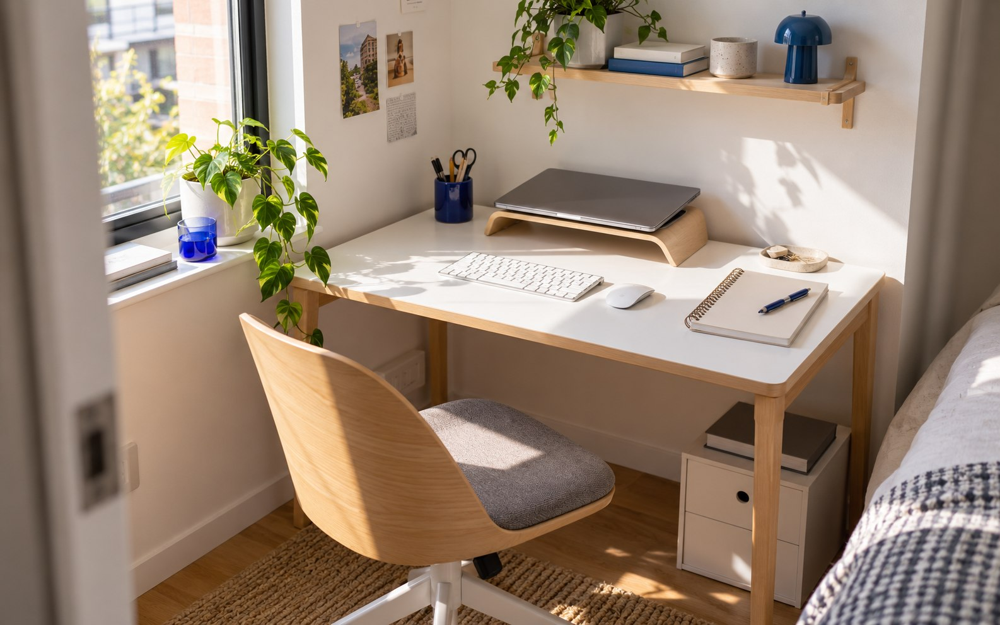

Không gian nhỏ
Một chiếc bàn, hai công việc: học trên máy, viết trên giấy
Đọc tiếp
Nếu vừa học trên máy vừa ghi chép, hãy chừa một vùng mặt bàn có thể chuyển đổi. Đặt thiết bị ít cần dịch chuyển về phía sau; gom bút và vật nhỏ vào một khay; giữ phần bàn còn lại cho cuốn sổ hoặc tài liệu đang dùng.
Khi đổi việc, bạn có thể dời khay và cất bàn phím nếu không cần tới. Hãy thử thực hiện cả hai công việc trước khi mua thêm đồ trang trí: vị trí nào khiến bạn phải liên tục dọn lại chính là nơi nên điều chỉnh đầu tiên.